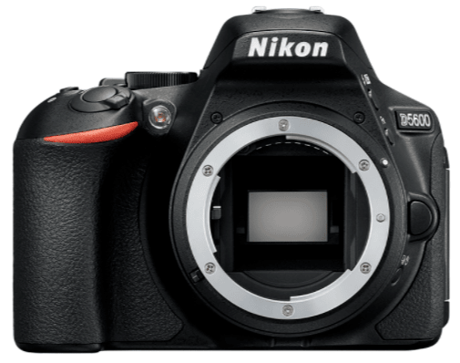
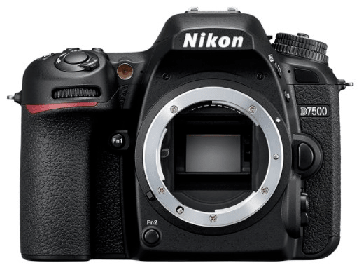
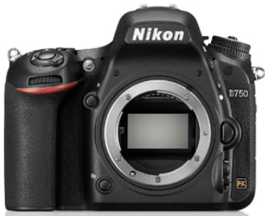

Camera for beginners or professionals thanks to its handling and what you can achieve with it.
It supports almost all types of lenses for the situation that best suits you. Complete and handy.

For professional photographers or those with some background in photography with a flip-up
screen. Allows you to take self-shot and self-recording to have independence in any moment you want to
capture being behind or in front of the camera.

Powerful and agile for beginners. Easy to use to get into the world of photography but you can
get professional results.

Professional and agile. For experts in photography and capturing perfection. Easy to carry and
use despite being for experienced people.